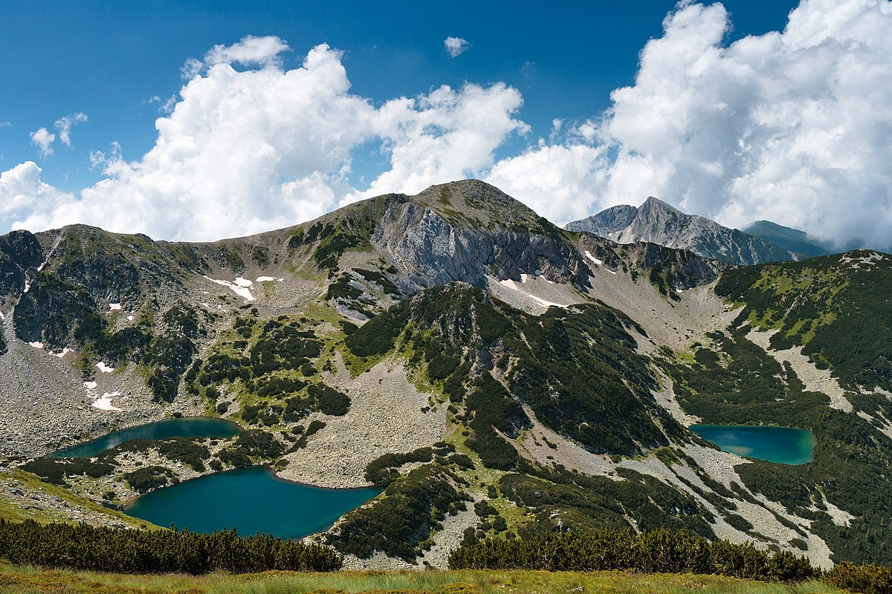
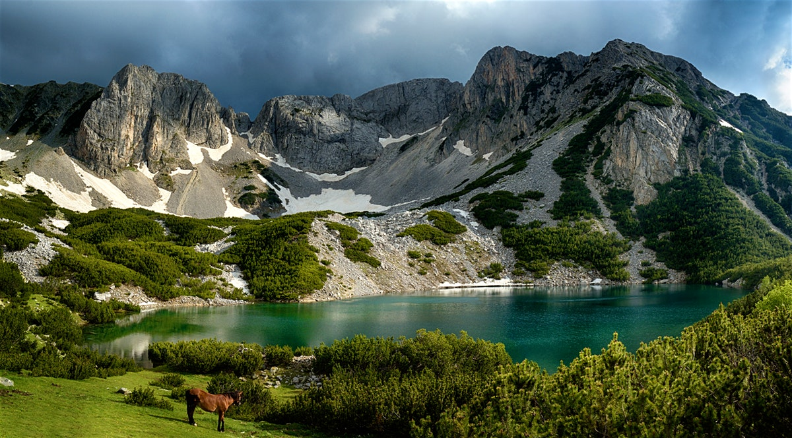
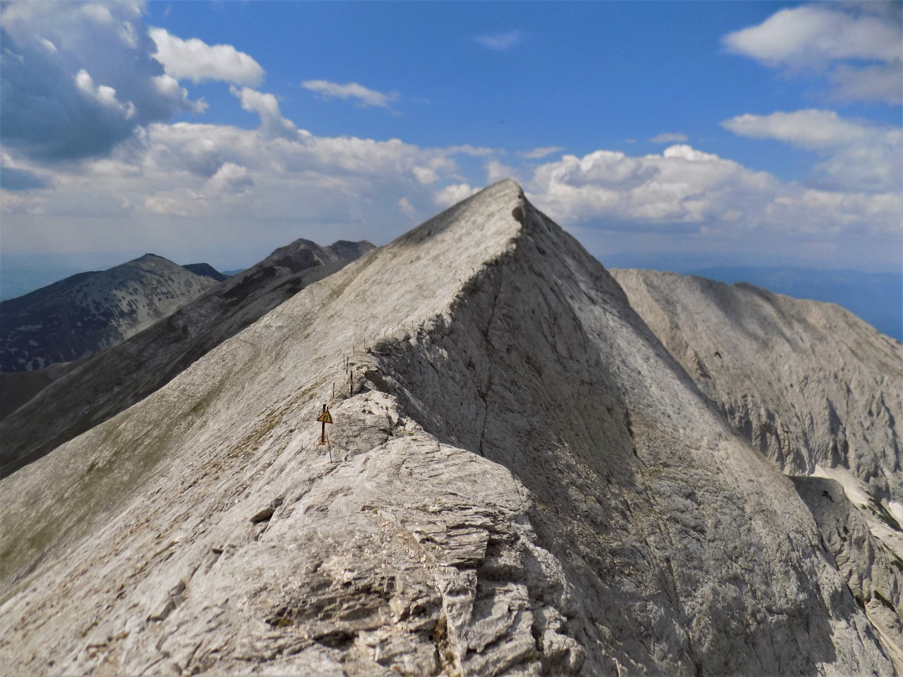
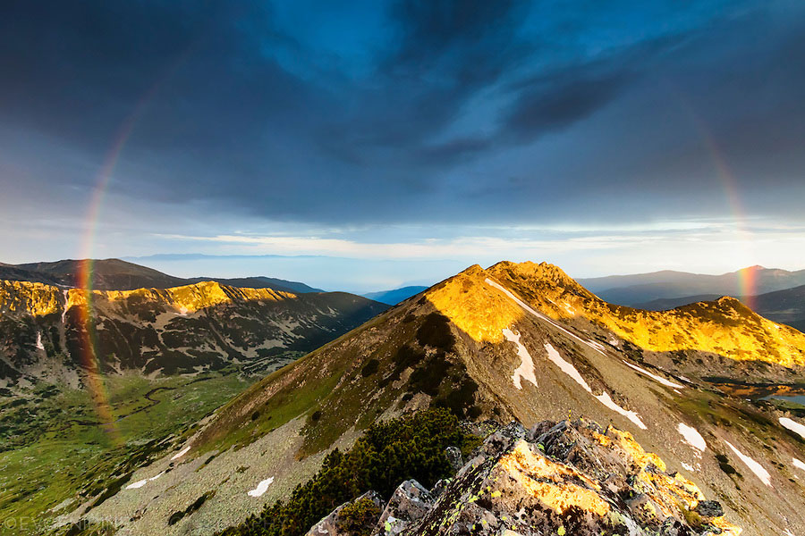
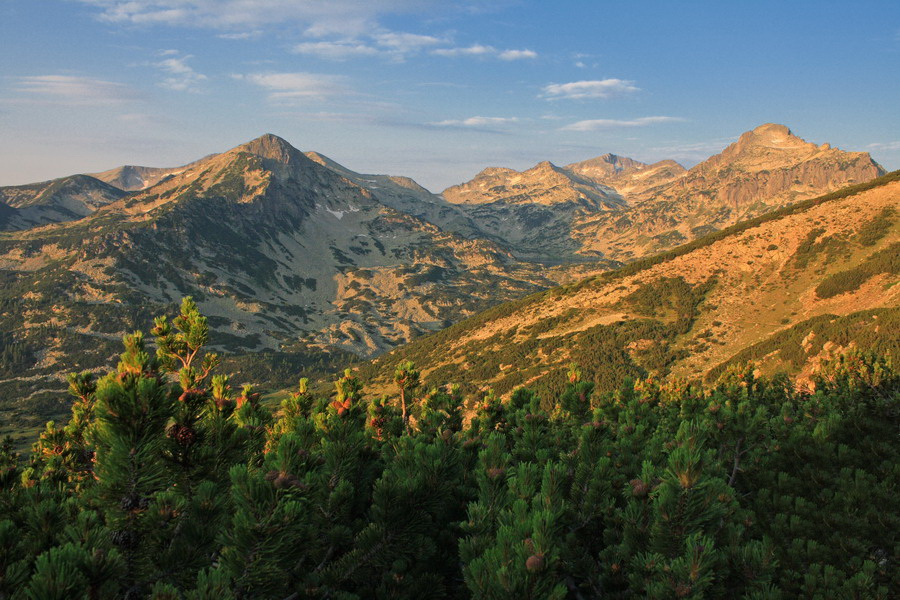
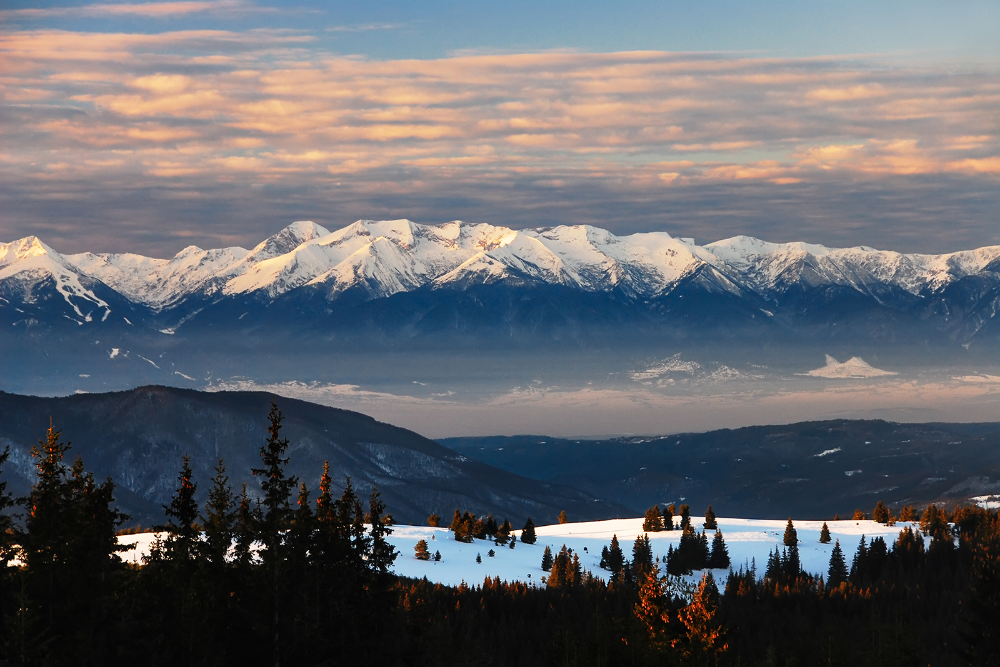

Пирин
Пирин е втората по височина планина в България, с най-висок връх Вихрен (2914 м.). Най-старото познато име на планината е Орбелус - белоснежна, познато ни от траките, докато славяните са я наричали Перин или Перун. Българите традиционно смятат, че името на Пирин идва от това на славянския бог Перун – повелителят на гръмотевиците. По-сериозните изследвания обаче показват, че имената Пирин и Перун съвпадат чисто случайно и името на Пирин идва от тракийската дума “перинтос”, което означава скала, която пък идва от хетската "перунаш".
Пирин е разположен в югозападния ъгъл на страната между долините на реките Струма и Места . На север граница с Рила е седловината Предел (1142 м), а на юг - Парилската седловина (1170 м), която отделя Пирин от планината Славянка. На изток от него е разположена планината Родопи, а на запад - Влахина, Малешевска и Огражден планина. В полите му са оформени и няколко полета като Разложкото, Гоцеделчевското и Петричко-Санданското. Площта му е 2585 квадратни километра, тоест той е сравнително компактна малка планина, което се потвърждава и от голямата му средна височина - 1033 метра.
В Пирин са оформени три неравномерни по площ дяла - северен, среден и южен.
Северен Пирин е най-големият дял на планината и всъщност неговата същинска част. Той заема 74% от цялата планина, дълъг е общо 42 км. Простира се от Предела на север до Тодорова поляна на юг - седловина на централното било, висока 1883 м. Северен Пирин е най-посещаваната част, само той има алпийски характер, множество езера и значителен брой хижи и заслони. Тук се намират и най-високите върхове- Вихрен (2914м.) и Кутело с височина 2908 метра. Върховете Кутело и Бански суходол (2884м.) са свързани помежду си с известната седловина "Кончето" с най-малка височина 2810 м. Северният дял е достатъчно голям, за да могат в него да се определят, макар и по-условно вътрешни малки дялове, съответстващи на четири части на Главното било и на четирите странични била - Мраморен дял (връх Вихрен), Северен централен дял (връх Бъндеришки чукар), Южен централен дял (връх Дженгал), Полежански дял (връх Голям Полежан), Каменишки дял (връх Каменица), Синанишки дял (връх Синаница) и дял Дебели рид (връх Ченгелчал).
Среден Пирин се простира между седловините Тодорова поляна и Попови ливади (Папаз чаир - 1430 м). Това е най-малкият (7%) и къс (7 км) дял, но най-високият му връх Ореляк достига 2099 метра. Той е мраморен красив връх, който, гледан от север прилича на орел с леко разтворени криле. Останалите върхове са ниски (под 2000 м) и гористи. Среден Пирин е покрит почти изцяло с широколистни гори, изобилстващи от тъй наречения Пирински чай (Sideritis scardica).
Южен Пирин е най-ниският и заоблен дял (връх Свещник - 1975 метра). Той заема 19% от планината и е дълъг около 11 км, колкото е и широк. Той е посещаван много слабо, няма туристически хижи. Плътно е покрит с иглолистни и широколистни гори. Изграден е от гранит в централните части и мрамор по периферията. На юг достига до Парилската седловина.
Пирин е много водна планина. Тя дава началото на голям брой реки, които принадлежат към водосборните басейни на Струма и Места. Най-голямото водно богатство на Пирин са красивите езера. На брой 176, те имат ледников произход, разположени са в малки и големи циркуси. Поради този си произход те са сравнително дълбоки, бистри, а поради височината - много студени. От високопланинските езера в България най-голямото пиринско езеро - Поповото е на четвърто място по големина и второ по дълбочина в България.
